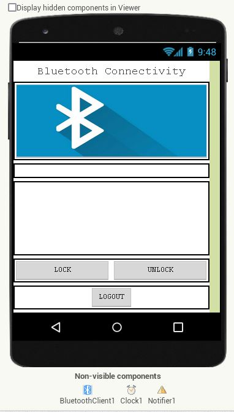
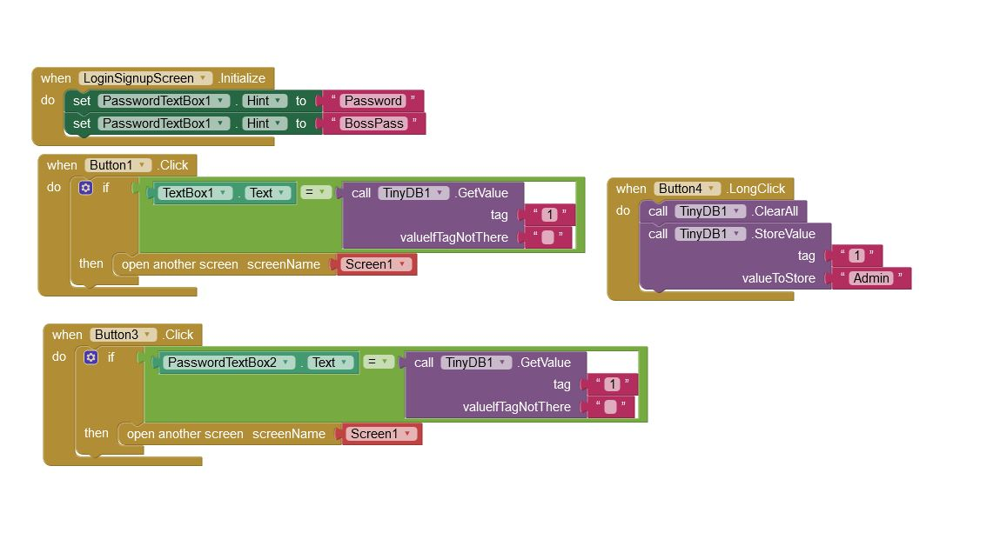
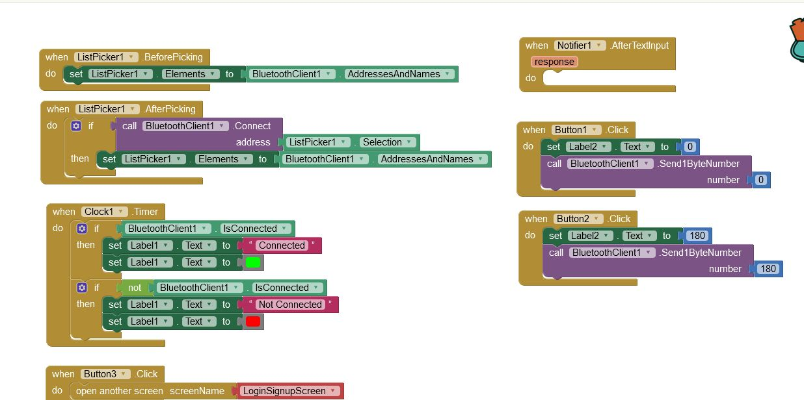
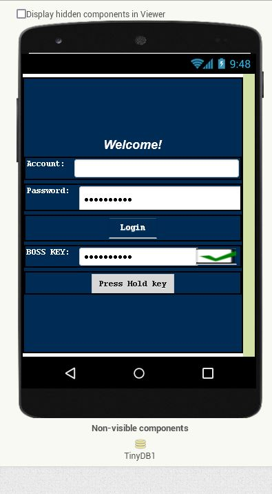
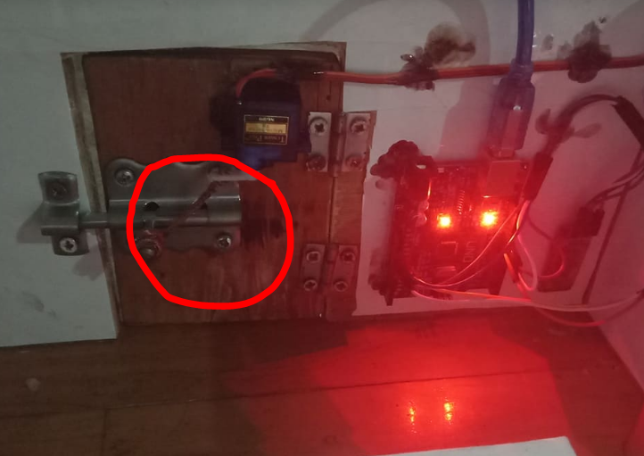

RC servo motors operate on the same principle. It contains a small DC motor that is connected to the output shaft via gears. The
output shaft drives the servo arm and is also connected to the potentiometer (Poti). The
potentiometer provides position feedback to the servo control unit and the current position of the motor is compared to the target position. In response to the
error, the controller corrects the actual position of the motor to correspond to the target position. The
servomotor is controlled by transmitting a series of pulses over the signal line. The frequency of the control signal should be 50Hz or a pulse should be generated every 20ms. The pulse width determines the angular position of the servo, and this type of servo can usually rotate 180 degrees.
Control cable is used to transmit the angle. The angle is determined by the duration of the pulse applied to the control line. This is known as pulse code modulation. The servo expects to see the pulse every 20 milliseconds (0.02 seconds). The length of the pulse determines how much the motor rotates. For example, a 1.5ms pulse causes the engine to rotate to a 90 degree position (often referred to as the neutral position). If the pulse is less than 1.5 ms, the motor will bring the shaft closer to 0 degrees. If the pulse is longer than 1.5 ms, the shaft will rotate close to 180 degrees.




